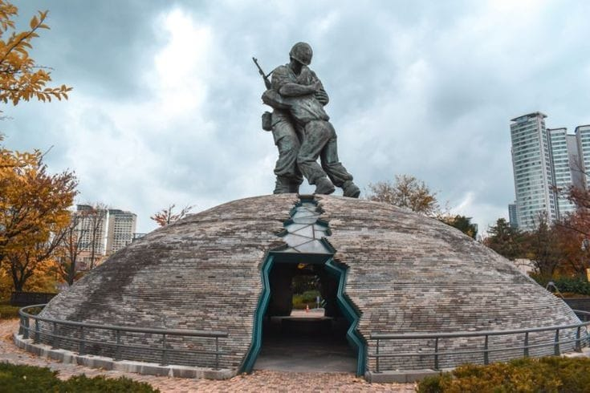
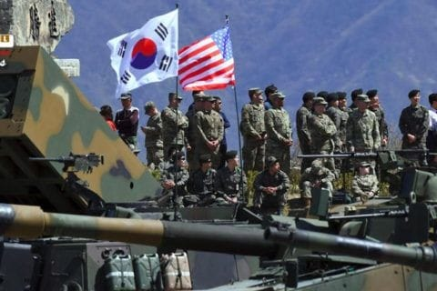

A divisão entre a Coreia do Norte e a Coreia do Sul começou após a Segunda Guerra Mundial, quando a península foi dividida em duas zonas de ocupação pelos Estados Unidos e pela União Soviética. Em 1948, a divisão se concretizou com a criação da República da Coreia (Coreia do Sul) no sul e da República Popular Democrática da Coreia (Coreia do Norte) no norte. Essa separação resultou em décadas de hostilidade, culminando na Guerra da Coreia.
A Guerra da Coreia foi um conflito militar que dividiu a península coreana em duas nações: a Coreia do Norte e a Coreia do Sul. A guerra começou em 1950, quando a Coreia do Norte invadiu o sul. A guerra envolveu várias nações, incluindo os Estados Unidos e a China, e terminou em 1953 com um armistício, mas sem um tratado de paz. A divisão das Coreias permanece até hoje, com os dois países em estados de tensão política e militar.
